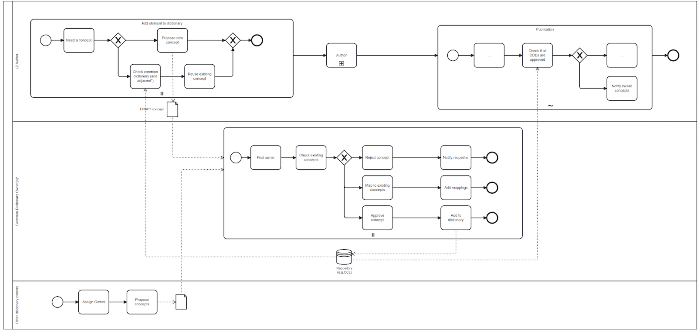

DRAFT SMART Guidelines L3 SOP
0.2.1 - CI Build

DRAFT SMART Guidelines L3 SOP
0.2.1 - CI Build

DRAFT SMART Guidelines L3 SOP, published by WHO. This guide is not an authorized publication; it is the continuous build for version 0.2.1 built by the FHIR (HL7® FHIR® Standard) CI Build. This version is based on the current content of https://github.com/WorldHealthOrganization/smart-ig-starter-kit and changes regularly. See the Directory of published versions
L3 authors have the responsibility to ensure that the data models use standard concepts. There are several reference information models and definitions, each with their purpose, their localization possibilities. Picking a standard model is therefore not guarantee of full-proof semantic interoperability.
For an L3 author, the requirement is to ensure that every data element mentioned in the logical model is mapped to a WHO Commons concept in the WHO Common dictionary.
This introduces the WHO SMART Commons dictionary as the pivotal semantic reference. In turn, the WHO SMART Commons dictionary relates to any other semantic reference
IMMZ.C#DE2 (Client name) SHALL map to
371484003 in SNOMED CTPatientAttributes.Namein IPSWhere possible, reference models should be used; different implementations may need to follow different models - this approach supports further semantic interoperability. See section “Semantic Compatibility Assessment” for more details.
The introduction of concept management (by means of common data dictionaries) enables a more complete approach to semantic interoperability.
Each concept in the Commons dictionary has therefore its definition and mappings:
The mapping is maintained centrally.
A possible governance process is displayed in the diagram below:
